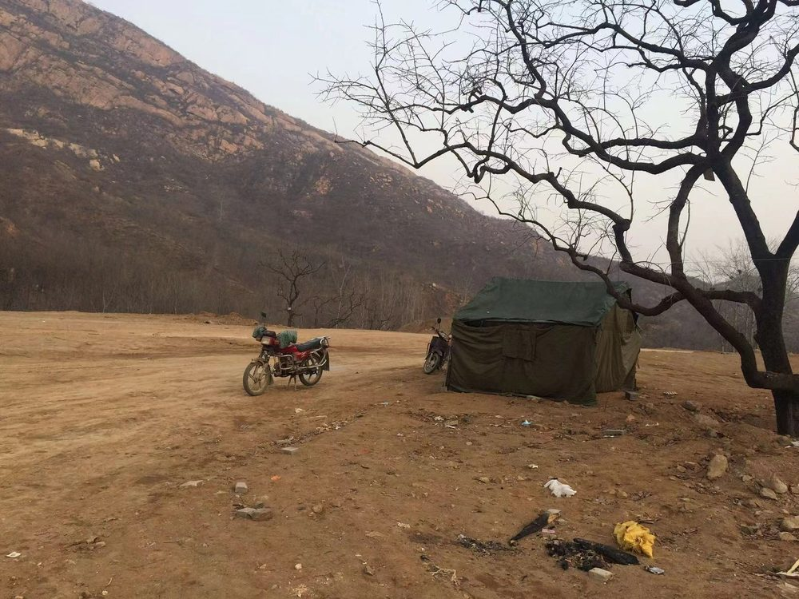
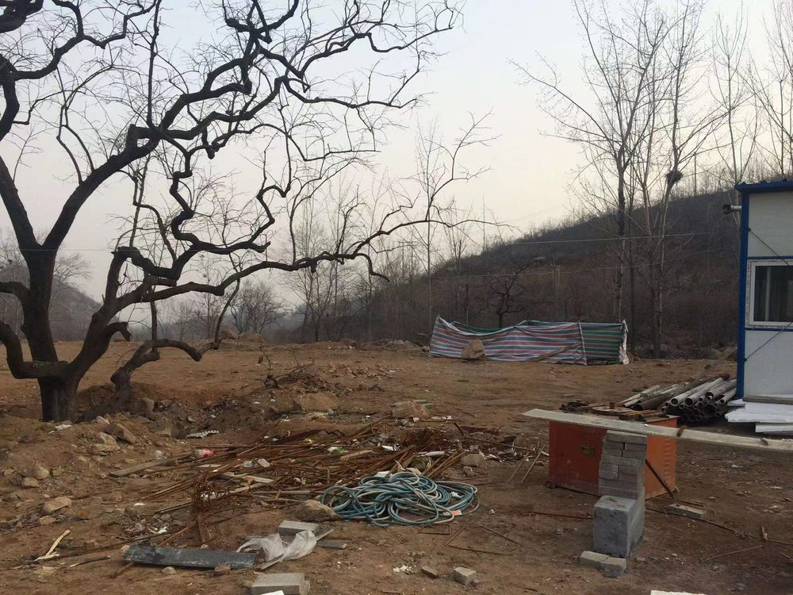

01
黄金寨 · 致活水厂
业主是敬业集团旗下的思泉涌饮用水有限公司。场地 1950 平方米，南北长 100 米。 2016 年 3 月签的合同，5 月完工。
项目在一个长寿村，村里老人大多活到 90 岁以上——因为地下水里含锶。 据史书记载，西汉末年刘秀被王莽追赶，曾在此处作过诗。四面环山，场地里还有长势很好的古树。
厂区需要大面积的停车和货运场地，能绿化的地方其实不多。 但我当时的判断是：在这样的大环境里，尽量少硬化、多绿化，做一个花园式厂区。 最后绿化率做到 60%，比居住区要求的 40% 还高。
这是公司最早在「工业园」和「康养」之间找平衡的一次尝试，也是在探索园林专业怎么落地到大尺度的自然山貌里。
十年过去了，厂区里现在应该绿树成荫。 2023 年我回访过一次，忘了拍照——下次再去黄金寨，一定补上。

